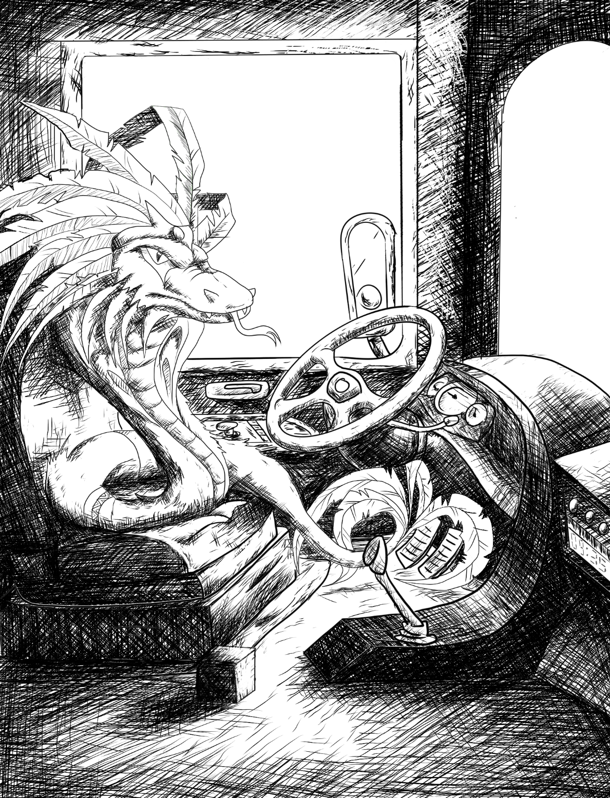

Project Triplicata
Vishnu On the Bus
I see this person everytime I take the shuttle to campus. They're always on their phone and in the same spot. One day I decided to speak to them, we ended up on a heated debate on why raisins are gross (a very controversial topic, indeed). We haven't spoken since. Still, their consistency intrigued me, so I decided to add them to the series.
Quezalcoatl Slamming on the Brakes
The shuttle driver is the nicest person I've met in a while. She likes to greet people with a warm smile and a "good mohning", usually with a strong hispanic accent. She’s always happy to strike a conversation with anyone that approaches her. I’ve known her for about 2 years, which makes me sad I won’t be able to see her much after I graduate.
Odin Does Another Update Video
Now here's a person I see almost everyday. Sometimes in 10:01 minute intervals, and usually after a few ads. I usually encounter him when I'm taking a break, or once I'm done with my day. I've known this person for a few years now, and it has been fun to see him grow in his career. He makes me laugh more than I should, and because of that I really question the quality of my sense of humor.

Kylan Oversleeps
I wake up to this person every morning, usually after her leg hits my stomach as she twists and turns. That is why this is the way I usually see her; sleeping, with a seren face, taking up the rest of the bed, and always with her back towards the sun. Sometimes, this is the same way I find her when I come back home. She is part of my daily routine in more ways than I signed up for. Still, my day wouldn’t be complete without her.

Anubis Doing Well on Sales
This person is someone, that for some reason, I had never considered to be part of my routine. It wasn’t until I started considering the people I see everyday that her face came to mind. Naturally, one pays little attention to how the workplace fits into one’s personal lives—it is enough to have to show up, anyways. Yet, I wouldn’t have been able to finance most of this project without her help.
My Shiny Teeth and Mohan
It is funny to think that I almost didn’t include this person in this project, given the figures are all people I see everyday. Even though, I don’t see this person’s face everyday, nor do I want to. Yet it is crucial I include him, or we. This is why I say it’s funny I almost didn’t include him. One almost never considers oneself to be part of one’s routine, it’s an obvious thing. For one to have a routine, there must be the one being that exists in both dimensions; I and him, us.